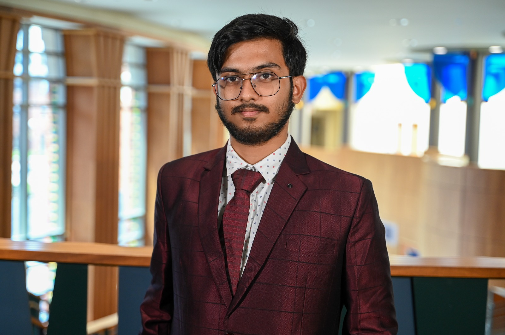

About Me
I am a M.Stat 2nd Year student at Indian Statistical Institute (ISI), Kolkata, where I also earned my Bachelor of Statistics (B.Stat) degree in 2025. I completed my schooling from Ramakrishna Mission Boys' Home, Rahara. During the summer of 2024, I was part of the Cancer Data Science Group at the Big Data Summer Institute (BDSI), School of Public Health, University of Michigan. My research interests include but are not limited to selective inference, randomization, spatio-temporal statistics, etc.

Accepted Papers
-
Chattopadhyay, S., Basu, S., Bhattacharya, S., Gogoi, M., and Das, K.,
Simultaneous clustering and joint modeling of multivariate binary longitudinal and time-to-event data (2025).
(Accepted at Lifetime Data Analysis)
Preprints
Talks
- D. Basu Gold Medal Talk - Indian Statistical Institute, Kolkata [Slides]
- Clustering of the Lung Cancer Data — Big Data Summer Institute, University of Michigan (Under Dr. Junsouk Choi, Grant Car, Dr. Veera Baladandayuthapani) With Swapnaneel Bhattacharyya (2024) [Presentation, Poster]
Selected Achievements
- Received the Nikhilesh Bhattacharya Memorial Gold Medal (at the 59th Convocation of ISI) for best performance in Statistics in the B.Stat. program (2021–2024), ISI Kolkata.
- Nominated for the D. Basu Gold Medal Talk for best student in B.Stat. (Hons.), 2021–2024 batch, ISI.
- Awarded prize money in all semesters of B.Stat., and all semesters of M.Stat. (till now).
- 2nd State Rank in Indian Olympiad Qualifier of Mathematics (IOQM), Mathematics Teachers’ Association.
- Selected for INMO Training Camp, HBCSE, Tata Institute of Fundamental Research.
- Selected for Junior Scholarship, Jagadis Bose National Science Talent Search (JBNSTS).